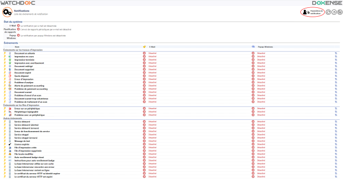
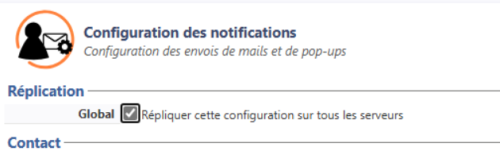
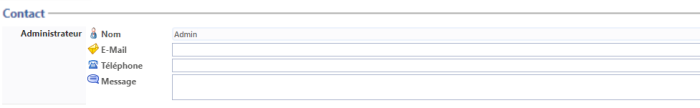
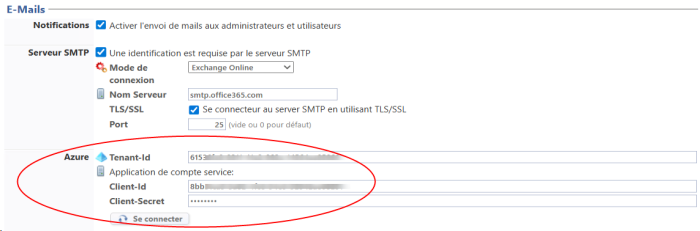
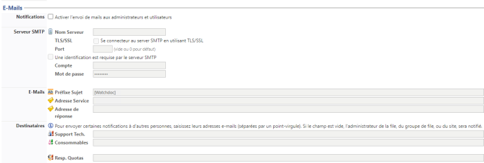
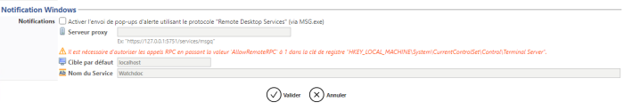
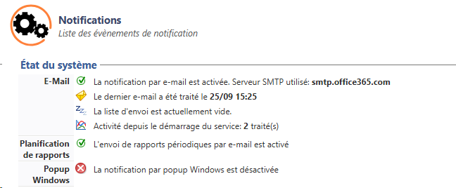
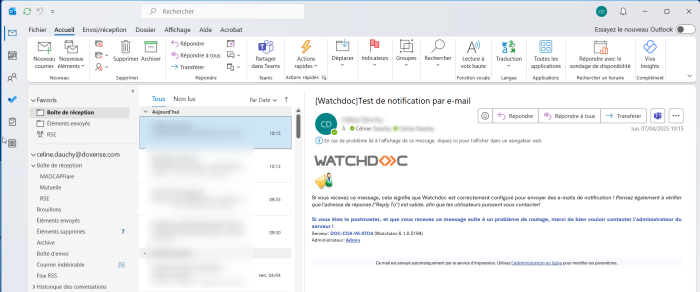

Accéder à l'interface de configuration
- Depuis le Menu principal de l'interface d'administration, section Configuration, cliquez sur Configuration avancée :
-
dans l'interface Configuration avancée, cliquez sur Notifications :
-
dans l'interface Notifications, cliquez sur Paramètres de notification :

-
Vous accédez à l'interface Configuration des notifications.
Configurer la section Réplication
Lorsque les serveurs sont organisés en Domaine (configuration master/slaves), une case à cocher Global permet de répliquer les droits définis pour le serveur maître sur les autres serveurs qui en dépendent (esclaves). Cette fonction permet un gain de temps et de cohérence lors de la configuration initiale.

N.B. : s'il existe des configurations propres aux serveurs esclaves, cocher cette case sur le serveur maître provoquera le remplacement de la configuration des serveurs esclaves par la configuration du serveur maître.
Configurer la section Contact
Dans cette section, vous pouvez configurer les informations du contact considéré comme l'émetteur des notifications envoyées aux utilisateurs. Ces informations sont facultatives :
-
Nom : saisissez l'identité (ou la qualité) de la personne en charge des notifications ;
-
e-mail : saisissez l'adresse e-mail de la personne en charge des notifications si vous souhaitez que les utilisateurs puissent répondre aux notifications en cas de besoin ;
-
Téléphone : saisissez le numéro de téléphone de la personne en charge des notifications ;
-
Message : saisissez le message qui accompagne l'envoi des notifications :

Configurer la section E-mails
Dans cette section, vous configurez les informations relatives aux modalités de notification par courriel.
Cette fonction permet d'envoyer des messages aux utilisateurs ou aux administrateurs de Watchdoc via un serveur SMTP Simple Mail Transfer Protocol (Protocole simple de transfert de courrier). Protocole de communication utilisé pour transférer le courrier électronique (courriel) vers les serveurs de messagerie électronique..
Simple Mail Transfer Protocol (Protocole simple de transfert de courrier). Protocole de communication utilisé pour transférer le courrier électronique (courriel) vers les serveurs de messagerie électronique..
Si le serveur mail est de type Exchange Online, il est nécessaire d'avoir préalablement configuré l'application dans Microsoft Entra (cf. Watchdoc - Notifications - Configurer l'application des Notifications dans Microsoft Entra).
-
Notifications - Activer l'envoi de mails aux administrateurs et utilisateurs : cochez la case si vous souhaitez que Watchdoc notifie les administrateurs et utilisateurs par courriel. Si vous activez cette fonction, complétez les sections suivantes :
-
Serveur SMTP
 Simple Mail Transfer Protocol (Protocole simple de transfert de courrier). Protocole de communication utilisé pour transférer le courrier électronique (courriel) vers les serveurs de messagerie électronique. : indiquez au minimum les paramètres suivants :
Simple Mail Transfer Protocol (Protocole simple de transfert de courrier). Protocole de communication utilisé pour transférer le courrier électronique (courriel) vers les serveurs de messagerie électronique. : indiquez au minimum les paramètres suivants : -
Nom Serveur : saisissez dans ce champ l'adresse IP du serveur SMTP utilisé par Watchdoc pour envoyer les courriels aux usagers ;
-
TLS
Protocole de sécurisation des Transport Layer Security. Protocole de sécurisation des échanges sur Internet, remplaçant le protocole SSL en 2001. SSL et le TLS sont des protocoles de chiffrement qui garantissent pleinement la sécurité des communications pour tous les mails échangés. Ces systèmes sont largement utilisés pour garantir la sécurité des communications sur internet./SSL Secure Sockets Layer. Protocole de sécurisation des échanges sur Internet, devenu Transport Layer Security (TLS) en 2001. : cochez la case si le serveur SMTP impose le protocole de sécurisation Transport Layer Security (TLS) ou Secure Sockets Layer (SSL).
Ce paramètre est obligatoire avec le mode de connexion Exchange Online. -
Port : indiquez le port d'accès au serveur SMTP.
Si nécessaire, précisez les paramètres suivants :
-
Une identification est requise : cochez cette case si l'utilisation du serveur SMTP nécessite une identification. Précisez les modalités de cette identification :
-
Mode de connexion : sélectionnez :
-
Compte & mot de passe s'il s'agit du mode d'identification, puis saisissez le Compte et le Mot de passe d'un utilisateur habilité à accéder au serveur SMTP ;
-
-
Exchange Online : MS Exchange modifie son mode d'authentification (entre sept.2025 et oct.2026) pour remplacer l'identification basique SMTP par une identification oauth2. Pour communiquer avec un serveur SMTP Exchange, il est donc nécessaire de compléter la section Azure (MS Entra-ID) avec les paramètres propres à cette application Microsoft® :
-
Tenant-Id : saisissez l'identifiant de locataire (de l'application MS Azure Exchange Online) ;
-
Client-Id : saisissez l'identifiant de l'application ;
-
Client-Secret : saisissez le secret de l'application.
N.B. : le Secret expire au terme d'un délai prédéfini dans MS Entra. Il est donc nécessaire de le mettre à jour dès qu'il est renouvelé, sous peine de ne plus pouvoir utiliser la fonction de Notifications et d'obtenir le message d'alerte "Failed to get an accessToken from Azure".
-
-
-
Sous-section E-mail :
-
Préfixe sujet : dans ce champ, saisissez un préfixe qui s'affichera dans l'objet du mail. Le préfixe permet à l'utilisateur d'identifier rapidement l'origine du mail et, ensuite, d'appliquer des filtres sur les courriels de cette nature.
-
Adresse Service : saisissez dans ce champ l'adresse mail d'un service ou d'un référent en charge de la gestion d'impression. Cette adresse doit être valide. Elle permet de réceptionner notamment les messages de retour automatiques de type accusés de réception et messages d'erreur (Mailer Daemon) ou réponses des utilisateurs
-
Adresse de réponse : si nécessaire, saisissez dans ce champ l'adresse courriel à laquelle sont envoyées les réponses des utilisateurs. Si vous souhaitez que les réponses générées par les utilisateurs puissent être distinguées des messages d'erreur automatiques, nous vous conseillons d'indiquer une Adresse de réponse qui, elle, est facultative.
-
-
Sous-section Destinataires : saisissez les adresses courriel de référents habilités à intervenir en cas de problèmes techniques détectés par le système, tels que l'arrêt d'un périphérique ou une alerte en cas de détection d'un niveau bas de consommable, par exemple.
-
Support technique : saisissez dans ce champ l'adresse courriel de la personne chargée de gérer techniquement les périphériques et qui pourra donc intervenir en cas de panne ou de problème ;
-
Consommables : saisissez dans ce champ l'adresse courriel de la personne chargée de gérer les consommables des périphériques et qui pourra donc intervenir dès qu'il sera nécessaire de réapprovisionner les périphériques en cartouches d'encre ou en papier, par exemple ;
-
Resp. Quotas : saisissez dans ce champ l'adresse courriel de la personne chargée de gérer les quotas d'impression (ou Porte-Monnaie Virtuels (PMV)).

-
Configurer la section Planification de rapports
Cette section permet de planifier les rapports gérés par le Communicateur de rapports (cf. Communicateur de rapports - Procédure de création et de configuration).
Configurer la section Notification Windows
Dans cette section, vous configurez les informations relatives aux notifications gérées par le service MSG.exe de MS Window.
-
case Notifications : cochez la case pour activer l'envoi de messages d'alerte utilisant le protocole Remote Desktop Services (RDS
Remote Desktop Services est un protocole qui permet à un utilisateur de se connecter sur un ordinateur faisant tourner Microsoft Terminal Services. Il est le successeur de Remote Desktop Protocol (RDP) et est implémenté à partir de la version R2 de Windows Server 2008. Il remplace complètement le Terminal Services.), via l'outil de commande MSG.exe de MS Windows. Si vous cochez la case, complétez le champ suivant : -
Proxy server : adresse du serveur où est activé le service Watchdoc Notification Serveur (en règle générale, installé sur le serveur web IIS).
-
-
Cible par défaut : saisissez dans ce champ le nom du poste sur lequel les notifications "Administrateur" seront envoyées ;
-
Nom du service : saisissez dans ce champ le nom qui s'affichera comme celui de l'expéditeur du message envoyé au poste client. Il peut s'agir, par exemple, du libellé : "Watchdoc, gestion des impressions" permettant une identification facile du message.

Valider la configuration
-
Cliquez sur le bouton pour Valider la configuration de la notification.
èUne fois la fonction de notification configurée, vous pouvez revenir à la liste des événements en cliquant sur le bouton Retour. Dans cette liste, vous configurez les événements qui déclenchent une notification.
Vérifier la configuration de la notification
Une fois les paramètres de la notification configurés,
-
Une fois cette opération terminée, vous pouvez vérifier l'état du système dans l'interface Notifications, section Etat du système :

-
par ailleurs, rendez-vous dans la boîte mail configurée dans la section Contact;
-
dans cette boîte, vérifiez que vous avez bien reçu un email "Test de notification par e-mail" : "Si vous recevez ce message, cela signifie que Watchdoc est correctement configuré pour envoyer des e-mails de notification".

èSi ces deux éléments sont vérifiés, c'est que la notification par e-mail est correctement configurée.